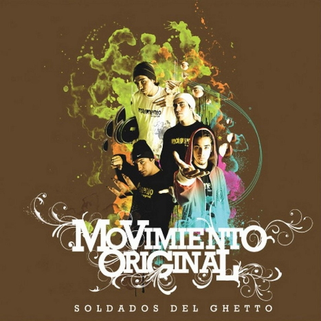

Soldados del Ghetto

Soldados del Ghetto es el primer álbum del grupo chileno Movimiento Original, lanzado el 11 de noviembre de 2008.
Es el primer álbum de Movimiento Original conformado por Mc Piri, Stailok, Aerstame y Dj Acres.
Discografia
- Intro
- M.O (Ritmo y Fe)
- Barrio Sin Luz
- Que Buscas
- Interludio Crea (Crea Beatbox)
- Hoy Escribi lo que me Sale
- A veces no se Puede Grabar (Interludio)
- Fe
- Interludio DJ Acres
- Cotidiano (con Salvaje Decibel)
- Manifiesto
- Grandes Pasos (con Mc Browen de Shamanes)
- Al Resguardo de la Paz
- Interludio DJ Acres 2
- Soldados Del Ghetto
- Decidete
- Yo te Canto
- En Reconocimiento
- Chile